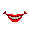
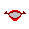
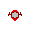

|
| ||
|
| ||
Microsoft Corporation
October 1998
 Download this document in Microsoft Word
(.DOC) format (zipped, 20.3K).
Download this document in Microsoft Word
(.DOC) format (zipped, 20.3K).
Contents
Introduction
Characters
Animations
Frames
Image Design
Frame Size
Frame Duration
Frame Transition
Speaking Animation
Mouth Animation Images
Agent States
The Hearing and Listening
States
The Gesturing States
The Idling States
The Speaking States
The Moving States
Standard Animation Set
Appendix
Animation
Principles
This document provides information that can help you design and develop a character for use with Microsoft® Agent. It includes conceptual and technical information on character, image, and animation design; the size, use of color, and types of images you need to create; suggested animations; speaking animations; and agent states. The Appendix describes effective animation principles you can use to create visually convincing animated characters.
This is advanced-level information intended for experienced developers. More information on the Agent Character Editor as well as designing and developing is provided on the Microsoft Agent Web site.
Human communication is fundamentally social. Microsoft Agent enables you to leverage this aspect of interaction using animated characters. Users will expect a character to conform to the same social, though not necessarily physical, rules they use when interacting with other people, even when they understand that the character is synthetic. To the extent that you create characters that meet their expectations, users will find your characters more believable and likable. Therefore, how you design a character can have a dramatic effect on its success.
When designing a character, first consider the profile of your target audience and what appeals to them as well as what tasks they do. Similarly, consider how well your character's design and style matches its purpose in addition to the application it supports. For example, a dog character may work well for a retrieval or security application depending on its overall appearance. Often the success is in the details. Research has shown that changing an animal character's roundness of eyes and ear shape can generate very different reactions to the character.
Also consider your character's basic personality type: dominant or submissive, emotional or reserved, sophisticated or down-to-earth; or perhaps you want to adapt its personality based on user interaction. For example, you can provide a control that enables a user to adjust whether the character volunteers more information or waits to be asked. The former would be more outgoing than the latter.
The name you supply for your character can infer a particular type of personality. For example, "Max" and "Linus" may convey very different personalities. The Microsoft Agent Character Editor enables you to set your character's name and include a short description. These attributes can be queried at run time.
In addition, decide whether you plan to use a synthetic voice (using a text-to-speech engine) or recorded voice (.WAV file). This decision may depend on the type of character you use, the languages you plan to support, and what you want the character to be able to say. For example, a synthesized voice enables your character to say almost anything. Programming what your character will say is easy and quick: You just supply the text the character will speak. However, using a computer-generated speech engine requires some extra overhead for initial installation and will be language-specific. Further, most synthesized voices sound computer-generated; they do not match the clarity and prosody of most human speech. It may be difficult to simulate a voice that matches your character, particularly if you use a character that already has an established identity or one that has a very distinctive voice. In such a case, you may want to use recorded speech files for your output. Microsoft Agent also supports lip-syncing for recorded speech output. Although audio files provide a natural voice and are easier to implement in other languages, they must be copied or downloaded to local machines. Recorded speech files also limit your character to the vocabulary contained in them. Whether you choose synthetic or recorded speech output, keep in mind that a voice carries with it additional social information about the gender, age, and personality of the speaker.
You can also decide to use the word balloon for output and the default settings for the balloon's font and color. Note, however, that the user can change the font and color attributes. In addition, you cannot assume that the word balloon's state remains constant because the user can turn the word balloon off.
A character's animations reflect its gender, age, personality, and behavior. The number and types of animations you create for a character depend on what your character does and how it responds to different situations.
Like traditional animations, digital animations involve creating a series of slightly differing images that, when displayed sequentially, provide the illusion of action. Creating high-quality animation images may require a skilled animator, but the style and presentation of the character you create also affect quality. Two-dimensional characters with simple shapes and features can sometimes be as effective as (or more effective than) highly rendered characters. It is not necessary to create a realistic image to portray an effective character. Many popular cartoon characters are not realistic in their presentation, yet they are effective because the animator understands how to convey action and emotion. The Appendix provides general information about fundamental animation design principles.
Each animation you create for a Microsoft Agent character is composed of a timed sequence of frames. Each frame in the animation is composed of one or more bitmap images. Images can be as small as you need them or as large as the frame itself.
Animation details such as eye blinking or finger movement can be included as additional images for the frame. You can overlay several images to create a composite, and vary their position in the layers. This technique enables you to reuse images in multiple frames and vary the details that change. For example, if you want to have a character wave its hand, for each frame you could use a base image with everything but the hand and overlay the base image with a different hand image. Similarly, if you want to make the character blink, you can overlay a different set of eyes over a base image for each frame. Images can also be offset from the base image. However, only the part of the image that exists within the frame's size will be displayed.
You can have as many frames in an animation as you wish; however, a typical animation averages about 14 frames so that it plays for no more than six seconds. This modest length of time ensures that your character appears responsive to user input. In addition, the greater the number of frames, the larger your animation file. For downloaded Web-based characters, keep the size of your animation file as small as possible while still providing a reasonably-sized set of frames, so that the character's animation does not appear jerky.
You can use any graphics or animation tool to create images for animation frames, provided that you store the final images in the Windows® bitmap (.BMP) format. When the images are created, use the Microsoft Agent Character Editor to assemble, sequence, and time the images, supply other character information, and compile all the information into a final character file.
Character images must be designed to a 256-color palette, preserving the 20 standard Windows system colors in their standard position in the palette (the first 10 and last 10 positions). That means your character's color palette can use the standard system colors and up to 236 other colors. When defining your palette, include any props your character uses in the animation. If your character's palette places colors in the system color positions, those character colors will be overwritten with the system colors when Microsoft Agent creates the palette.
The larger the number of colors you use in a character's color palette, the greater the possibility that part of your character's colors may get remapped for systems configured to an 8-bit (256) color setting. Consider also the palette usage of the application in which the character will be used. It's best to avoid having the character remap the colors of its host application and vice-versa. Similarly, if you plan to support multiple characters displayed at the same time, you'll probably want to maintain a consistent palette for those characters. You might consider using only the standard system colors in your character if you target users with an 8-bit color configuration. However, this still may not prevent remapping of your character's color if another application extensively redefines the color palette. On systems set to higher color resolutions, color palette remapping should not be a problem because the system manages the color palettes automatically.
Using a larger number of colors in an image can also increase the overall size of your animation file. The number of colors and frequency of variation may determine how well your character file compresses. For example, a two-dimensional character that uses only a few colors will compress better than a three-dimensional, shaded character.
You must use the same color palette for your entire character file. You cannot change the palette for different animations. If you attempt to support 8-bit color configurations, consider using the same palette for your application and any other characters you plan to support.
The 11th position in the palette is defined by default as the transparency (or alpha) color, although you can also set the color using the Microsoft Agent Character Editor. The Microsoft Agent animation services render transparent any pixels in this color, so use the color in your images only where you want transparency.
Carefully consider the shape of your character, because it can affect animation performance. To display the character, the animation services create a region window based on the overall image. Small irregular areas often require more region data and may reduce the animation performance of your character. Therefore, when possible, avoid gaps or single-pixel elements and details.
Avoid anti-aliasing the outside edge of your character. Although anti-aliasing is a good technique to reduce jagged edges, it is based on adjacent colors. Because your character may appear on top of a variety of colors, anti-aliasing the outside edge may make your character appear poorly against other backgrounds. However, you can use anti-aliasing on the inside details of your character without encountering this problem.
Frame size should typically be no larger than 128 x 128 pixels. Although characters can be larger or smaller in either dimension, the Microsoft Agent Character Editor uses this as its display size, and scales character images if you define a larger frame size. The 128 x 128 frame size makes reasonable tradeoffs with the space the character will occupy on the screen. Your application can scale a character at run time.
You can use the Microsoft Agent Character Editor to set how long each frame of animation will display before moving to the next frame. Set the duration of each frame to at least 10 hundredths of a second (10 frames per second) -- anything less might not be perceptible on some systems. You can also set the duration longer, but avoid unnatural pauses in the action.
The Microsoft Agent Character Editor also supports branching from one frame in an animation to another, based on probability percentages that you supply. For any given frame, you can define up to three different branches. Branching enables you to create animations that vary when they are played and animations that loop. However, be careful when using branching as it may create problems when trying to play one animation after another. For example, if you play a looping or branching animation, it could continue indefinitely unless you use a Stop method. If you are uncertain, avoid branching.
Frames that don't have images and are set to zero duration do not appear when included in an animation. You can use this feature to create frames that support branching without being visible. However, a frame that does not have images yet has a duration greater than zero will be displayed. Therefore, avoid including empty frames in your animation, because the user may not be able to distinguish an empty frame from when the character is hidden.
When designing an animation, consider how to smoothly transition from and to the animation. For example, if you create an animation in which the character gestures right, and another in which the character gestures left, you want the character to animate smoothly from one position to the other. Although you could build this into either animation, a better solution is to define a neutral or transitional position from which the character starts and returns. Animating to the neutral position can be incorporated as part of each animation or as a separate animation. In the Microsoft Agent Character Editor, you can specify a complementary Return animation for each animation for your character. The Return animation should typically be no more than 2-4 frames so the character can quickly transition to the neutral position.
For example, using the "gesturing right, then gesturing left" scenario, you can create a GestureRight animation, starting with a frame where the character appears in a neutral position, and add frames with images that extend the character's hand to the right. Then create its Return animation: a complementary animation with images that return the character to its neutral position. You can assign this as the Return animation for the GestureRight animation. Next, create the GestureLeft animation that starts from the neutral position and extends the character's arm to the left. Finally, create a complementary Return animation for this animation as well. A Return animation typically begins with an image that follows the last image of the preceding animation.
Starting and returning to the same neutral position, either within an animation or by using a Return animation, enables you to play any animation in any order. The Microsoft Agent animation services automatically play your designated Return animation in many situations. For example, the services play the designated Return animation before playing your character's Idling state animations. It is a good idea to define and assign Return animations if your animations do not already end in the neutral position.
If you want to provide your own transitions between specific animations; for example, because you always play them in a well-defined order, you can avoid defining Return animations. However, it is still a good idea to begin and end the sequence of animations from the neutral position.
Supply mouth images for each animation during which you want the character to be able to speak, unless your character's design has no animated mouth or indication of spoken output. In general, mouth movement is very important. A character may appear less intelligent, likable, or honest if its mouth movement is not reasonably synced with its speech. Mouth images allow your character to lip-sync to spoken output. You define mouth images separately and as Windows bitmap files. They must match the same color palette as the other images in your animation.
The Microsoft Agent animation services display mouth animation frames on top of the last frame of an animation, also called the speaking frame of the animation. For example, when the character speaks in the GestureRight animation, the animation services overlay the mouth animation frames on the last frame of GestureRight. A character cannot speak while animating, so you only supply mouth images for only the last frame of an animation. In addition, the speaking frame must be the end frame of an animation, so a character cannot speak in a looping animation.
Typically, you would supply the mouth images in the same size as the frame (and base image), but include only the area that animates as part of the mouth movement, and render the rest of the image in the transparent color. Design the image so that it matches the image in the speaking frame when overlaid on top of it. To have it match correctly, it is likely you'll need to create a separate set of mouth images for every animation in which the character speaks.
A mouth image can include more than the mouth itself, such as the chin or other parts of the character's body while it speaks. However, if you move a hand or leg, note that it may appear to move randomly because the mouth overlay displayed will be based on the current phoneme of a spoken phrase. In addition, the server clips the mouth image to the speaking frame image's outline. Design your mouth overlay image to remain within the outline of its base speaking frame image, because the server uses the base image to create the window boundary for the character.
The Microsoft Agent Character Editor enables you to define seven basic mouth positions that correspond to common phoneme mouth shapes shown in the following table:
| Mouth Position | Sample Image | Representation |
|---|---|---|
| Closed |
|
Normal mouth closed shape.
Also used for phonemes such as "m" as in "mom," "b" as in "bob," "f" as in "fife." |
| Open-wide 1 |
 |
Mouth is slightly open, at full
width.
Used for phonemes such as "g" as in "gag," "l" as in "lull," "ear" as in "hear." |
| Open-wide 2 |
|
Mouth is partially open, at full
width.
Used for phonemes such as "n" as in "nun," "d" as in "dad," "t" as in "tot." |
| Open-wide 3 |
|
Mouth is open, at full width.
Used for phonemes such as "u" as in "hut," "ea" as in "head," "ur" as in "hurt." |
| Open-wide 4 |
|
Mouth is completely open, at
full width.
Used for phonemes such as "a" as in "hat," "ow" as in "how." |
| Open-medium |
 |
Mouth is open at half width.
Used for phonemes such as "oy" as in "ahoy," "o" as in "hot." |
| Open-narrow |
 |
Mouth is open at narrow width.
Used for phonemes such as "o" as in "hoop", "o" as in "hope," "w" as in "wet." |
The Microsoft Agent animation services automatically play certain animations for you. For example, when you use MoveTo or GestureAt commands, the animation services play an appropriate animation. Similarly, after the idle time out, the services automatically play animations. To support these states, you can define appropriate animations and then assign them to the states. You can still play any animation you define directly using the Play method, even if you assign it to a state.
You can assign multiple animations to the same state, and the animation services will randomly choose one of your animations. This enables your character to exhibit a far more natural variety in its behavior.
Although animations that you assign to states can include branching frames, avoid looping animations (animations that branch forever). Otherwise, you will have to use the Stop method before you can play another animation.
It's important to define and assign at least one animation for each state that occurs for the character. If you do not supply these animations and state assignments, your character may not appear to behave appropriately to the user. However, if a state does not occur for a particular character, you need not assign an animation to that state. For example, if your host application never calls the MoveTo method, you can skip creating and assigning Moving state animations.
| State | Example of Use |
|---|---|
| GesturingDown | When the GestureAt animation method is processed. |
| GesturingLeft | When the GestureAt animation method is processed. |
| GesturingRight | When the GestureAt animation method is processed. |
| GesturingUp | When the GestureAt animation method is processed. |
| Hearing | When the beginning of spoken input is detected. |
| Hiding | When the user or the application hides the character. |
| IdlingLevel1 | When the character begins the Idling state. |
| IdlingLevel2 | When the character begins the second Idling level state. |
| IdlingLevel3 | When the character begins the final Idling level state. |
| Listening | When the character starts listening (the user first presses the speech input hot key). |
| MovingDown | When the MoveTo animation method is processed. |
| MovingLeft | When the MoveTo animation method is processed. |
| MovingRight | When the MoveTo animation method is processed. |
| MovingUp | When the MoveTo animation method is processed. |
| Showing | When the user or the application shows the character. |
| Speaking | When the Speak animation method is processed. |
The animation you assign to the Listening state plays when the user presses the push-to-talk hot key for speech input. Create and assign a short animation that makes the character look attentive. Similarly, define its Return animation to have a short duration so that the character plays its Hearing state animation when the user speaks. A Hearing state animation should also be brief, and designed to let the user know that the character is actively listening to what the user says. Head tilts or other slight gestures are appropriate. To provide natural variability, provide several Hearing state animations.
You need to create and assign Gesturing state animations only if you plan to use the GestureAt method. Gesturing state animations play when Microsoft Agent processes a call to the GestureAt method. If you define mouth overlays for your Gesturing state animations, the character can speak as it gestures.
The animation services determine the character's location and its relation to the location of the coordinates specified in the method, and play an appropriate animation. Gesturing direction is always with respect to the character; for example, GestureRight should be a gesture to the character's right.
The Showing and Hiding states play the assigned animations when the user or the host application requests to show or hide the character. These states also appropriately set the character frame's Visible state. When defining animations for these states, keep in mind that a character can appear or depart at any screen location. Because the user can show or hide any character, always support at least one animation for these states.
Animations that you assign to the Showing state typically end with a frame containing the character's neutral position image. Conversely, Hiding state animations typically begin with the neutral position. Showing and Hiding state animations can include an empty frame at the beginning or end, respectively, to provide a transition from the character's current state.
The Idling states are progressive. The animation services begin using the Level 1 assignments for the first idle period, and use the Level 2 animations for the second. After this, the idle cycle progresses to the Level 3 assigned animations and remains in this state until canceled, such as when a new animation request begins.
Design animations for the Idling states to communicate the state of the character, but not to distract the user. The animations should appropriately reflect the responsiveness of the character in subtle but clear ways. For example, glancing around or blinking are good animations to assign to the IdlingLevel1 state. Reading animations work well for the IdlingLevel2 state. Sleeping or listening to music with headphones are good examples of animations to assign to the IdlingLevel3 state. Animations that include many or large movements are not well suited for idle animations because they draw the user's attention. Because Idling state animations are played frequently, provide several Idling state animations, especially for the IdlingLevel1 and IdlingLevel2 states.
Note that an application can turn off the automatic idle processing for a character and manage the character's Idling state itself. The Agent Idling states are designed to help you avoid any situation where the character has no animation to play. A character image that does not change after a brief period of time is like an application displaying a wait pointer for a long time, which detracts from the sense of believability and interactivity. Maintaining the illusion does not take much: sometimes just an animated blink, visible breath, or body shift.
The animation services use the Speaking state when a speaking animation cannot be found for the current animation. Assign a simple speaking animation to this state. For example, you can use a single frame consisting of the character's neutral position with mouth overlays.
The Moving states play when an application calls the MoveTo method. The animation services determine which animation to play based on the character's current location and the specified coordinates. Movement direction is based on the character's position. Therefore, the animation you assign to the MovingLeft animation should be based on the character's left. If you don't use the MoveTo method, you can skip creating and assigning an animation.
Moving state animations should animate the character into its moving position. The last frame of this animation is displayed as the character's frame is moved on the screen. There is no support for animating the character while its frame moves.
While you can design a custom character to have the animations you want to use, Microsoft Agent defines a standard animation set. Characters that conform to this definition can be selected as a default character.
The following table lists the animations included in the standard animation set. Even if you are creating a custom character, you may want to use the list as a guide for designing your own characters. Characters that support the standard animation set must support at least the following animations.
| Animation | Example of Use | Example Animation |
|---|---|---|
| Acknowledge | When the character acknowledges the user's request. | Character nods or flashes "OK"
hand gesture.
Note that this animation should return the character to its neutral position. |
| Alert ¹ ² | When the character is waiting for instructions, typically played after the user turns on listening mode. | Character faces front, breathing, blinking occasionally, but clearly awaiting instruction. |
| Announce ¹ ² | When the character has found information for the user. | Character gestures by raising eyebrows and hand or opens an envelope. |
| Blink | When the character finishes speaking or idle. | Character naturally blinks eyes. |
| Confused ¹ ² | When the character doesn't understand what to do. | Character scratches head. |
| Congratulate ¹ ² | When the character or user completes a task (a stronger form of the Acknowledge animation.) | Character performs congratulatory gesture, conveys "YES!" |
| Decline ¹ ² | When the character cannot do or declines the user's request. | Character shakes head, conveys "no can do." |
| DoMagic1 ¹ | Character prepares to display something. | Character waves hands or wand. |
| DoMagic2 ² | Character prepares to display something. | Character completes magic gesture. |
| DontRecognize ¹ ² | When the character didn't recognize the user's request. | Character holds hand to ear. |
| Explain ¹ ² | When the character explains something to the user. | Character gestures as if explaining something. |
| GestureDown ¹ ² | When the character needs to point to something below it. | Character points down. |
| GestureLeft ¹ ² | When the character needs to point to something at its left. | Character points with left hand or morphs into an arrow pointing left. |
| GestureRight ¹ ² | When the character needs to point to something at its right. | Character points with right hand or morphs into an arrow pointing right. |
| GestureUp ¹ ² | When the character needs to point to something above it. | Character points up. |
| GetAttention ¹ | When the character needs to notify the user about something important. | Character waves hands or jumps up and down. |
| GetAttentionContinued ¹ | To emphasize the importance of the notification. | A continuation or repeat of the initial gesture. |
| GetAttentionReturn | When the character completes the GetAttention or GetAttentionContinued animation. | Character returns to neutral position. |
| Greet ¹ ² | When the user starts up the system. | Character smiles and waves. |
| Hearing1 | When the character hears the start of an spoken utterance (actively listening). | Character leans forward and
nods, or turns head showing response to speech input.
Note: This animation loops to some intermediate frame that occurs after the character moves to an appropriate position. |
| Hearing2 | When the character hears the start of an spoken utterance (actively listening). | Another variation of the type of
animation used in Hearing1
Note: This animation loops to some intermediate frame that occurs after the character moves to an appropriate position. |
| Hide | When the user dismisses the character. | Character removes self from screen. |
| Idle1_1 | When the character has no task and the user is not interacting with the character. | Character blinks or looks around, remaining in or returning to the neutral position. |
| Idle1_2 | When the character has no task and the user is not interacting with the character. | Another variation of the type of animation used in Idle1_1. |
| Idle2_1 | When the character has been idle for some time. | Character yawns or reads magazine remaining in or returning to the neutral position. |
| Idle2_2 | When the character has been idle for some time. | Another variation of the type of animation used in Idle2_1. |
| Idle3_1 | When the character has been idle for a long time. | Character yawns. |
| Idle3_2 | When the character has been idle for a long time. | Character sleeps or puts on
headphones to listen to music.
Note: This animation loops to some intermediate frame that occurs after the character moves to an appropriate position. |
| LookDown | When the character needs to look down. | Character looks down. |
| LookLeft | When the character needs to look left. | Character looks to the left. |
| LookRight | When the character needs to look right. | Character looks to the right. |
| LookUp | When the character needs to look up. | Character looks up. |
| MoveDown | When the character prepares to move down. | Character transitions to a walking/flying down position. |
| MoveLeft | When the character prepares to move left. | Character transitions to a walking/flying left position. |
| MoveRight | When the character prepares to move right. | Character transitions to a walking/flying right position. |
| MoveUp | When the character prepares to move up. | Character transitions to a walking/flying up position. |
| Pleased ¹ ² | When the character is pleased with the user's request or choice. | Character smiles. |
| Process | When the character performs some type of generic task. | Character presses buttons or uses some type of tool. |
| Processing | When the character is busy processing a task. | Character scribbles on pad of
paper.
Note: This animation loops to some intermediate frame that occurs after the character moves to an appropriate position. |
| Read ¹ | When the character reads something to the user. | Character displays book or paper, reads, and looks back at user. |
| ReadContinued ¹ | When the character reads further to the user. | Character reads again, then looks back at user. |
| Reading | When the character reads something but cannot accept input. | Character reads from a piece of
paper.
Note: This animation loops to some intermediate frame(s) that occurs after the character moves to an appropriate position. |
| RestPose ¹ | When the character speaks from its neutral position. | Character stands with relaxed but attentive posture. |
| Sad ¹ ² | When the character is disappointed with the user's choice. | Character frowns or looks disappointed. |
| Search | When character is searches for something. | Character shuffles through file drawer or other container looking for something. |
| Searching | When character is searching for user-specified information. | Character shuffles through file
drawer or other container looking for something.
Note: This animation loops to some intermediate frame(s) that occurs after the character moves to an appropriate position. |
| Show | When the character starts up or returns after being summoned. | Character pops up in a puff of smoke, beams in, or walks on-screen. |
| StartListening ¹ ² | When the character is listening. | Character puts hand to ear. |
| StopListening ¹ ² | When the character stops listening. | Character puts hands over ears. |
| Suggest ¹ ² | When the character has a tip or suggestion for the user. | Light bulb appears next to character. |
| Surprised ¹ ² | When the character is surprised by the user's action or choice. | Character widens eyes, opens mouth. |
| Think ¹ ² | When the character is thinking about something. | Character looks up and holds hand on head. |
| Uncertain ¹ ² | When the character needs the user to confirm a request. | Character looks quizzical, conveys ("Are you sure?") |
| Wave ¹ ² | When the user chooses to shut down the server or system. | Character waves good-bye or hello. |
| Write ¹ | When the character is listening for instructions from the user. | Character displays paper, writes, and looks back at user. |
| WriteContinued ¹ | When the character continues listening for instructions from the user. | Character writes on a piece of paper and looks back at user. |
| WriteReturn | When the character completes the Write or WriteContinued animation. | Character returns to its neutral position. |
| Writing | When the character writes out information for the user. | Character writes on piece of
paper.
Note: This animation loops. |
¹ Animation requires mouth overlays and a defined speaking frame.
² Animation requires an assigned Return animation either based on its exit branching or an explicit Return animation.
In addition, a character must have the following state
assignments.
| State | Required Animations |
|---|---|
| GesturingDown | GestureDown |
| GesturingLeft | GestureLeft |
| GesturingRight | GestureRight |
| GesturingUp | GestureUp |
| Hearing | Hearing1, Hearing2 |
| Hiding | Hide |
| IdlingLevel1 | Blink, Idle1_1, Idle1_2 |
| IdlingLevel2 | Blink, Idle1_1, Idle1_2, Idle2_1, Idle2_2 |
| IdlingLevel3 | Idle3_1, Idle3_2 |
| Listening | Alert |
| MovingDown | MoveDown |
| MovingLeft | MoveLeft |
| MovingRight | MoveRight |
| MovingUp | MoveUp |
| Showing | Show |
| Speaking | RestPose |
Effective animation design requires more than simply rendering a character. Successful animators follow a variety of principles and techniques to create "believable" characters.
Squash and Stretch
There should be a degree of distortion as an animated object moves. The amount of deformation that occurs reflects the rigidity of that object. Flattening or elongating a part of a character's body as it moves helps you convey the nature and composition of the character.
Anticipation
Anticipation sets the stage for an upcoming action. Without anticipatory actions, body movements look abrupt, rigid, and unnatural. This principle is based on how a body moves in the real world. Movement in one direction often begins with movement in the opposite direction. Legs contract before a jump. To exhale, you first inhale. Anticipatory action also has an important role in communicating the nature of both the character and the action and helps your audience prepare for the action. A key aspect of creating a believable character involves demonstrating that the character's actions stem from a purposeful intent. Anticipation helps communicate the character's motivation to the audience.
Timing
Timing defines the nature of an action. The speed that a head moves from left to right conveys whether a character is casually looking around or giving a negative response. Timing also helps convey the weight and size of an object. Larger objects tend to take longer to accelerate and decelerate than smaller ones. In addition, the pacing of a character's movements affects how it draws attention. In a normal scenario, rapid motion draws the eye, while in a frenetic environment, stationary or slow movements may have the same effect.
Staging
The background and props a character uses can also convey its mood or purpose. Staging also includes what the character wears, lighting effects, viewing angle, and the presence of other characters. These elements all contribute to reinforcing a character's personality, objectives, and actions. Effective staging involves understanding how to direct the eye to where you want to communicate.
Follow-Through and Overlapping Action
Just as a golfer's follow-through communicates the result of the swing, the transition from one action to the next is important in communicating the relationship between the actions. Actions rarely come to a sudden and complete stop. So, too, follow-through and overlapping actions allow you to establish the flow of the character's motion. You can typically implement this by varying the speed at which different parts of a body move, allowing movement beyond the primary aspect of the motion. For example, the fingers of a hand typically follow the movement of the wrist in a hand gesture. This principle also emphasizes that actions should not come to a complete stop, but smoothly blend into other actions.
Slow In-and-Out
Slow in-and-out refers to moving a character smoothly from one pose to another. The character begins and ends actions slowly. You accomplish this by the number, timing, and location of "in-between" frames. The more in-between frames you include, the slower and smoother the transition.
Arcs
Living objects in nature rarely move in a perfectly straight line. As a result, arcs or curved paths for movement provide more natural effects. Arcs also convey speed of motion. The slower the motion, the higher the arc, and the faster the motion, the flatter the arc.
Exaggeration
Good animators often exaggerate the shape, color, emotion, or actions of a character. Making aspects of the motion "larger than life" more clearly communicates the idea of the action to the audience. For example, a character's arms may stretch to the point that they appear elastic. However, exaggeration must be balanced. If used in some situations and not others, the exaggerated action may appear unrealistic and may be interpreted by the user as having a particular meaning. Similarly, if you exaggerate one aspect of an image, consider what other aspects should be exaggerated to match.
Secondary Action
Animation requires more than the mechanistic creation of in-between images from one pose to the next. A primary action is typically supported by secondary actions. Secondary actions can enhance the presentation, but should not detract from or dominate the main action. Facial expressions can often be used as secondary actions to body movement. Richness comes from adding elements that support the main idea.
Solid Drawing
Creating an animated character involves more than creating a series of images. Effective animation design considers how the character looks in different positions and from different angles. Even characters rendered as two-dimensional images become more realistic and believable if considered conceptually in three dimensions. Avoid twins: mirroring the position the face, arms, and legs on both sides of the body. This results in a wooden, unnatural presentation. Body movement is rarely symmetrical, but involves overall balancing of posture or reactions.
Appeal
Successful implementation depends on how well you understand your audience. Your character's overall image and personality should appeal to your target audience; appeal does not require photo-realism. A character's personality can be conveyed-no matter how simple its shape -- by using gestures, posture, and other mannerisms. A common assignment of beginning animators is to create a variety of expressions for a flour sack or small rug. Characters with simple shapes are often more effective than complex ones. Consider, for example, that many popular characters have only three fingers and a thumb.
Did you find this material useful? Gripes? Compliments? Suggestions for other articles? Write us!
© 1999 Microsoft Corporation. All rights reserved. Terms of use.